<div class="topbar__container">
  <button (click)="displayMenu()">
    
    
  </button>
  <p class="logo-mobile">Hayile</p>
  
  <ul class="navbar-menu" *ngIf="statusOfMenu">
    <li><p class="item-menu" (click)="envSelect('vsc')">Visual Studio Code</p></li>
    <li><p class="item-menu" (click)="envSelect('gitdesktop')">Git</p></li>
    <li><p class="item-menu" (click)="envSelect('vim')">Vim</p></li>
    <li><p class="item-menu" (click)="envSelect('figma')">Figma</p></li>
  </ul>
  <div class="opacity" (click)="closeMenu()" *ngIf="statusOfMenu"></div>
</div>
<theme-toggle></theme-toggle>
